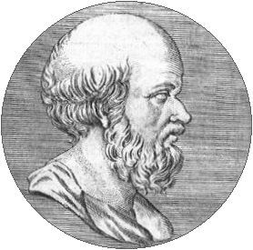
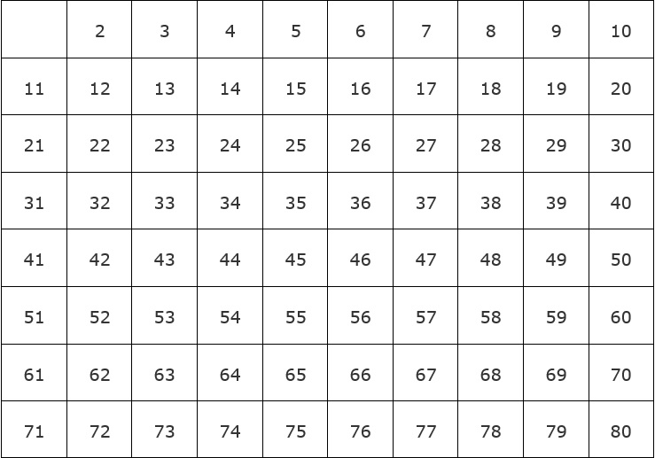
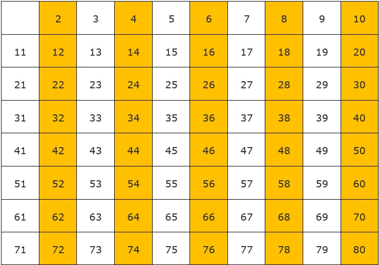
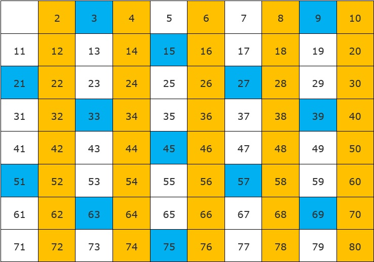

Eratóstenes
Fue un matemático, astrónomo, geógrafo y filósofo griego (Cirene, c. 284 a.J.C. - Alejandría, c. 192 a.J.C.). Además de eso él era también un adepto en la poesía, filología y filosofía, por este hecho el fue titulado como "pentatleta", que significa campeón de muchas especialidades.

Anónimo. (2012) Eratóstenes. [Imagen]. Recuperado de https://commons.wikimedia.org/wiki/File:Erat%C3%B3stenes.jpgÉl vivió en Atenas, pero luego se traslado a Alejandría en el año 245 a.J.C. para educar a los hijos del Faraón Tolomeo III, en esta ciudad también se encargó de dirigir su magnífica biblioteca.
Criba de Eratóstenes
Se trata de un algoritmo que permite hallar todos los números primos menores de un numero natural dado N.
Este método como se mencionó anteriormente se basa en la creación de una tabla con numeración desde el numero natural 2 hasta el numero natural N. La razón por la que el numero natural 1 no es incluido, es debido a que 1 es el numero neutro de la multiplicación y no es considerado primo.
En el siguiente ejemplo se hallarán los números primos comprendidos entre 1 y 80.



Primos: {2, 3, 5, 7, 11, 13, 17, 19, 23, 29, 31, 37, 41, 43, ,47, 53, 59, 61, 67, 71, 73, 79}.
Este método es muy sencillo y entendible, pero esto aplica solo para hallar los números primos de números pequeños, después de todo aplicar este método de coloración de tablas puede ser muy largo y tedioso en números grandes. Aun así, este procedimiento puede ser muy útil en la programación.
Referencias
Reguero Marisa. (s.f). Números primos: cómo encontrarlos con la criba de Eratóstenes. Recuperado de https://www.smartick.es/blog/matematicas/numeros/numeros-primos-criba-eratostenes/Todo ejemplo de la página son de caracter propio